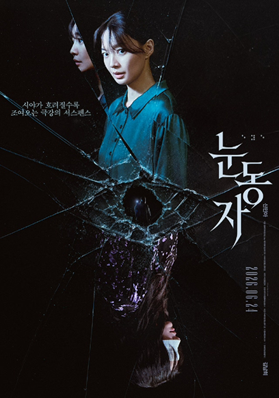

유전병으로 점차 시력을 잃어가는 사진작가 ‘서진’(신민아).
어느 날, 자신보다 먼저 시력을 잃었지만
도예가로 성공한 쌍둥이 동생 ‘서인’(신민아)이 죽어있는 것을 발견한다.
모두가 자살이라 하지만, 서진은 무언가 잘못됐음을 직감한다.
동생의 작업실 속 의미를 알 수 없는 작품들,
그리고 그날 그 자리에 있었던 ‘누군가’.
아무도 자살이 아니라는 자신의 말을 믿어주지 않자,
직접 진실을 좇기 시작한 ‘서진’은
점점 꺼져가는 시야 속 범인의 또 다른 표적이 되어간다.